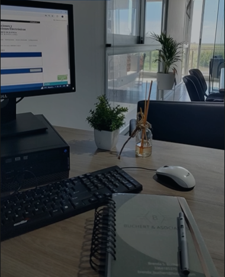
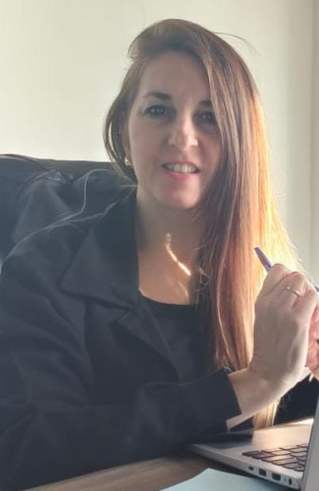

Cada familia merece un proceso claro, sin sorpresas.
Asesoramiento legal en Derecho de Familia y Sucesiones para personas y familias de San Nicolás de los Arroyos y la región. Trato personalizado, explicaciones simples y acompañamiento en cada etapa.
Un acompañamiento pensado para tu familia.

"Detrás de cada expediente hay una historia, una familia o un patrimonio que proteger — y eso empieza por escuchar."
Somos el estudio Bus dechert & Asociados, abogadas con oficina en San Nicolás de los Arroyos. Nos dedicamos especialmente al Derecho de Familia y a las Sucesiones, acompañando a las personas en momentos que suelen ser difíciles: separaciones, acuerdos sobre hijos, herencias y la organización del patrimonio familiar.
Cada caso se analiza en profundidad para ofrecer una estrategia clara, explicada en términos simples, desde la primera consulta.
Dos áreas, un mismo criterio: acompañarte en cada etapa.
Especialización en Derecho de Familia y Sucesiones, con información clara desde la primera reunión.
Derecho de Familia
- Divorcios y convenios reguladores
- Cuota alimentaria
- Cuidado personal y régimen de comunicación
- Uniones convivenciales
- Violencia familiar y medidas de protección
Sucesiones
- Inicio y trámite de sucesiones
- Declaratoria de herederos
- Partición de bienes
- Planificación sucesoria
- Sucesiones testamentarias y ab intestato
Escribime y coordinemos una consulta
Contame brevemente tu situación y te propongo los próximos pasos.
 ·
·